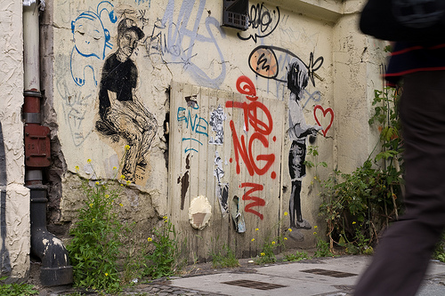
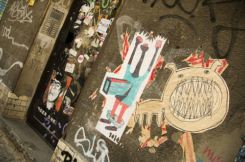
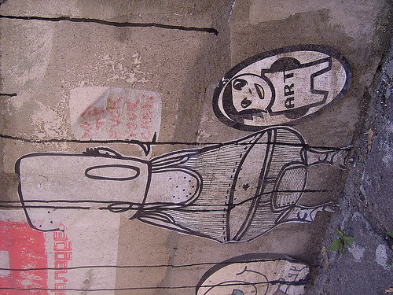
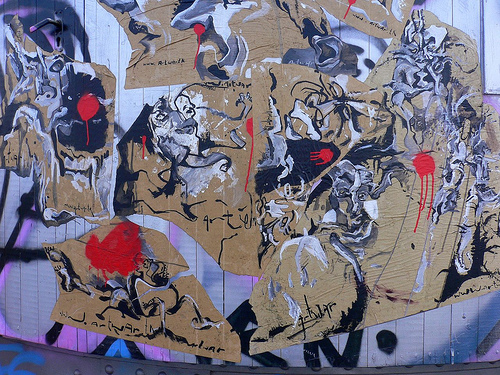
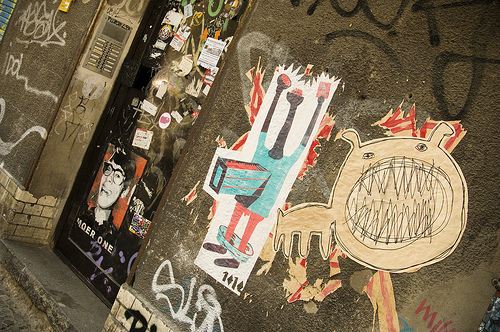
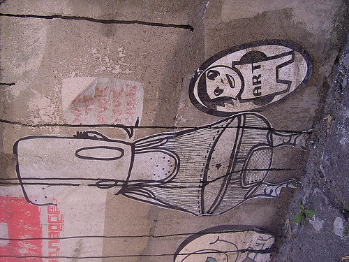
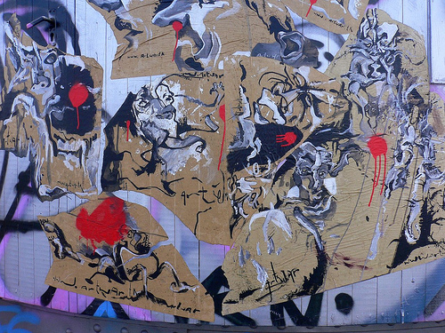
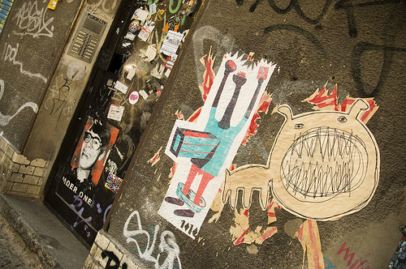
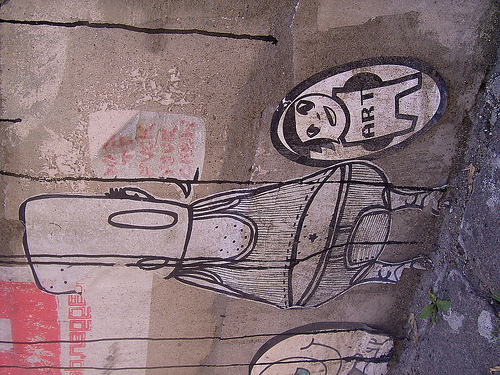
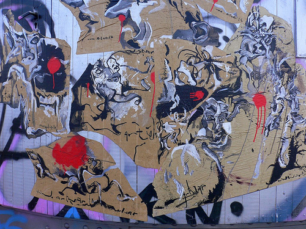

Markup
<div id="photos">
<img src="images/sa_m_1.jpg" alt="Streetart 1" width="500" height="333" />
<img src="images/sa_m_2.jpg" alt="Streetart 2" width="500" height="332" />
<img src="images/sa_m_3.jpg" alt="Streetart 3" width="500" height="332" />
<img src="images/sa_m_4.jpg" alt="Streetart 4" width="500" height="375" />
<img src="images/sa_m_5.jpg" alt="Streetart 5" width="500" height="375" />
</div>
<div id="controls">
<a href="#previous" id="prev">« Previous</a> - <a href="#next" id="next">Next »</a>
</div>Note: You need to set the width and height attribute of the images to prevent a bug in Chrome.
Code
$(document).ready(function() {
$('#photos').photostack({
speed : 600,
easeIn : 'easeOutExpo',
easeOut : 'easeInExpo',
direction : 'horizontal',
randomTop : 0,
randomLeft : 50,
rotateDeg : 2
});
});Result

 







